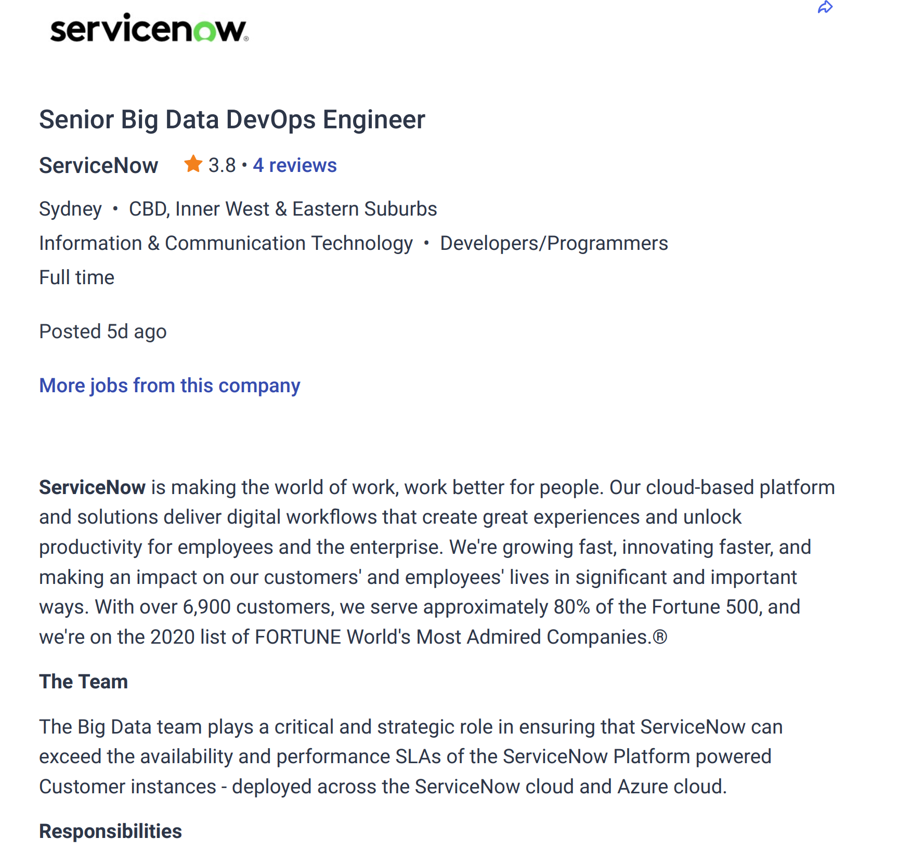
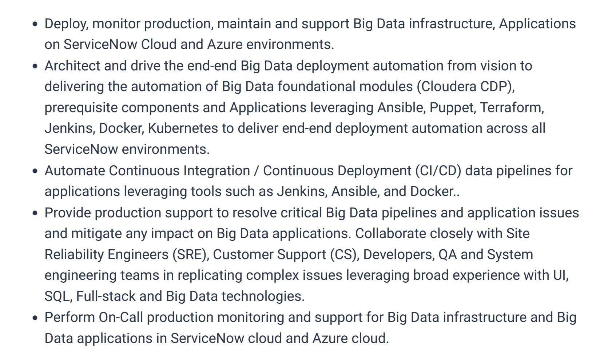

Links
Github Repo: https://github.com/s3496168/I2IT-Assignment_1.git
Website published via GitHub: https://s3496168.github.io/I2IT-Assignment_1/
My Profile-Brearne Gibson
Personal Information
My name is Brearne. My student number is s3496168. I’m originally from Hobart, Tasmania. But I am now based in Melbourne. I have no hobbies. One not so fun fact about me is that I’m currently quarantining with Covid-19.
What is your interest in IT?
When did your interest in IT start?
I always enjoyed trying to repair things or set things up growing up. As an adult, I’m fascinated with the technology that now enhances our lives. I have an interest in big data. Data that can be used by programs to recommend certain decisions. Hence, you could say I’ve always had an interest in iT, but this has evolved with changing technology.
Why did you choose to come to RMIT?
I have already completed a degree in Information Systems. I started this degree in 2010 and finished last year (2021). This degree did not include a capstone unit. I already have completed some units with RMIT and understand that the Bachelor of IT at RMIT does include such a unit (or a like one). Hence, here I am.
What do you expect to learn during your studies?
I expect that there will be a practical/capstone unit at the end of the course. In the meantime, some more programming skills would be nice! Other than that, I’m not to sure what to expect. I know there is more to IT than just programming
Ideal Job
Senior Big Data Dev Ops Engineer
https://www.seek.com.au/job/56279181?type=standout#sol=f74c758a38ecf7dae98cecd264d294d28241f0e0



This position requires design and maintenance of big data related infrastructure. The infrastructure houses many big data projects. To think I could have a hand in supporting this many applications all at once…..wow! Rightfully, this position requires experience with (what seems to me to be) just about every business-related software application (sans Microsoft Windows). Knowledge of shell scripting is also required. Hardly surprising given the automation requirement. What is surprising is that not formal education is listed as required. Likely because experience is going to matter much more. To the point where listing one’s degree on the cover letter would now be considered wasting space. I can’t even compare to the requirements listed here. All I have is an information systems degree, a diploma in computer systems technology and several certificates. I understand that obtaining a graduate position may be a step up a long flight. I would try to gain as much experience as possible. Also, I would likely need to engage in a lot of professional development for such a position. Indeed, at present, the reason for me taking this course to complete a capstone-like unit. So I may gain more exposure to industry.
Personal Profile
Test one (Meyers-Briggs personality test-16 personalities) reveals that I am a Mediator (INFP-T) type. That I may serve the role of a diplomat well. Also that I may implement a Constant Improvement type strategy. Test two (Personality Max Learning Style reveals that I am a visual learner. That I learn best when presented with visual tools. These could include images, charts, diagrams, videos and others. That I am able to recognise something or someone by looking at it/them. Test three (DISC personality) reveals that I am a personality type S (steady). That I am likely to be able to multitask well and able to work with patience and care. However, apparently, I won’t react well to being put under pressure and changes. Given the requirements, there is likely to be plenty of visual material around. So this is a non-issue. I will need to keep in mind others may work well under pressure. Others may be focussed on getting tasks done rather than aiming for the best we can be. I don’t think it is realistic to actively seek to work with people who bear the same traits as me. I would rather work around and support any differences my team members have. And use our differences as an advantage. The result of the first test particularly provides reason to my attitude to group work.
Project Idea
Overview:
A rip current is a concentration of receding water flow (Means, 2017). Note that while rip currents are not caused by the weather, weather types can affect the severity of a rip current (Harris, c2019). The Rip Currents Coastal Safety Brief 2021 reports that 3.7 million people have been (unintentionally) caught in a rip (p.7). 26% of these people required rescuing. Only 46% of beach attenders look for rip currents (p.0). Overall, about 10% of adults surveyed reported that they could confidently spot a rip current (p.18). Also, the Rip Currents Coastal Safety Brief 2021 reports that while (in Australia) there are patrolled beaches, only 42% visit the patrolled beaches during patrol hours (p.0). While this is the safest option, clearly it isn’t the option many take. To reduce some harm, I am proposing a a smartphone app that provides up to the minute information on were rip currents may be occurring.
Description:
To open the app, a user would tap on an icon. This icon will feature a specifically designed logo. The user would be able to search for an area to see up to date information on currents. The location would be found by typing in name of location, or its postcode. There may also be an auto location feature added. A map would then display the chosen location, along with information about known currents. There would also be a text-based description of currents underneath the map. This text is aimed at improving accessibility for those using screen readers (or other apps used by those with visual impairments). The majority of those who drown in a rip current are 20–29-year-old males (Rip Currents Coastal Safety Brief 2021, pp.3-4). Hence, the interface will need to be designed in a manner that appeals to them. Research to determine the most appropriate fonts and colour schemes would need to be conducted. Also, language used through the app will have to be appealing to this age group. The app will also provide some information about what a rip current looks like. This information will be text and image based. A short video of a rip current in action may be added. This is to enable the user to have the opportunity (should they wish) to learn about rip currents. Including what rip currents look like, and how they behave. To make this app as available as possible, it would be available on both Android and Apple IoS devices. The app will be available in two editions: freemium and premium. There is a fee to access one of the necessary Application Programming Interfaces (APIs). There are also costs associated with having corporate email. Staff time also costs money. It will be necessary to raise funds to pay for this access on an ongoing basis. This may be done via advertising revenue. This may include banner advertisements, or pop over advertisements. A premium version would be available to permit the user to have an advertisement free experience. A freemium user would not require an account. A premium version would. The cost of back-end storage would also be covered by the premium fee. The app will have a feature which allows the user to provide feedback. This will be available in both editions. Users may be willing (for example) to point out any problems they are having using the app. Or suggest any additional features they would like. This is aimed at providing a) an enhanced user experience, and b) a way for the app to stay current (in the eyes of the user) and relevant.
Tools and technologies:
I would require a code editor for my PC. Microsoft Visual Studio Code is free (Anonymous, 2022). It is also possible to use Microsoft’s Visual Studio Code to develop apps in Kotin (Sahni, 2018). I would choose to use Microsoft’s Visual Studio Code for this. For corporate email, I would use Google Workspace. For database storage, I would use Google Cloud Database. Google Workspace and Google Cloud Database are fit for the purposes required, without adding any costs. To upload the Apple IoS app to the Apple Store, I would need a Mac computer. Obtaining a Mac would allow me to access Xcode. Xcode is Apple’s official Integrated Development Environment and offers the developer the ability to develop an app and deploy the app to the Apple Store seamlessly (Anonymous, 2022c). This functionality is not available elsewhere (DFW333 2021). To ensure quality control, I would also hire additional testers. I anticipate that by having someone else go over the code, any personal bias is reduced. I also intend to make use of existing APIs. The Bureau of Meteorology offers an API which contains the required wave sea and swell information. Note that while this is open source, it is not free (Anonymous, 2022d). I also intend to use the Google Maps API. Google Maps API can offer locating services. Google Maps API is both free and open source (Anonymous, 2022e).
Skills required:
I would need to gain additional skills to develop the app. I would need to learn Kotlin, of which I have no experience in. Kotlin (at time of writing) is the official development language for Android app development (Anonymous, 2022f). I would also need to learn (from scratch) Swift. Swift is (at time of writing) the official development language for Apple IoS app development (Anonymous, 2022g). An additional API would also be required. This would be to integrate the APIs from Google Maps and from the Bureau of Meteorology. As some of the data is provided, the machine learning API would be of the semi supervised learning type. It is possible to develop such an app using python. However, I know I would need to develop further skills in Python to develop this.
Outcome:
Ideally, I would like to think this app would reduce instances of drowning. The original problem of people, particularly those in the target demographic, may now have an awareness of any rip currents being at their location. They may now take this information on board and choose a different destination. I am anticipating that this would result in more people surviving their swim at the beach. That they may instead continue to be the family member, friend, neighbour, classmate and/or colleague.